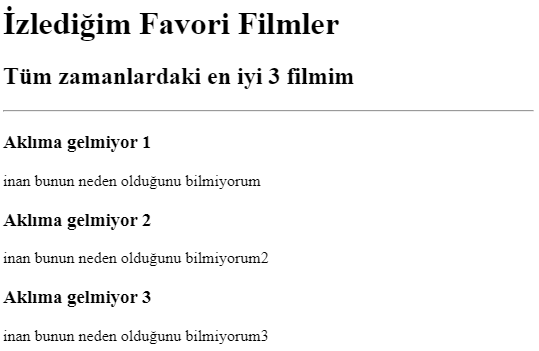

Osman BATIR'ın Portfolyosuna Hoşgeldiniz!
Yeni bir eğitim alıyorum ve bu da benim ilk projem
Doğum Günü Davetiyem Burada
Doğum günü davetiyemin önizlemesi aşağıda gösterildiği gibidir.
En Sevdiğim Filmler Burada
En sevdiğim filmler sayfamın önizlemesi aşağıda gösterildiği gibidir.

Hakkımda
İletişim